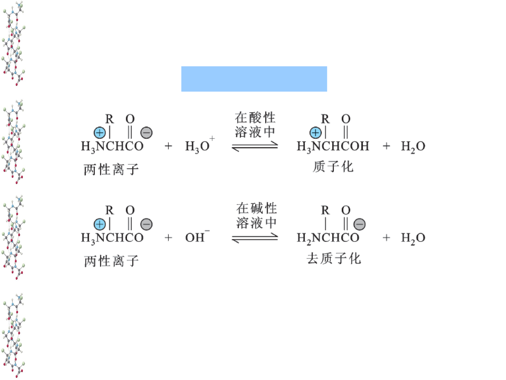

决定肽键、肽平面和主链氢键的可能性。
CHAPTER 02 · AMINO ACIDS
氨基酸：侧链把同一骨架写成不同化学性格
课堂 PPT + 杨荣武《生物化学原理》第四版，围绕“R 基团怎样改变电荷、反应性与蛋白质结构”整理。
结构与分类
酸碱平衡
特异性侧链
1. 先抓住不变与可变

图源：第2章《氨基酸》PPT，第19页。
标准 α-氨基酸的主链都由 α-碳、α-氨基和 α-羧基组成；真正决定差异的是 R 基团。因此不要把“20 种氨基酸”当成 20 个孤立名字：它们是在同一主链上替换 R 的一组化学探针。
核糖体合成蛋白质使用的标准氨基酸通常为 L-构型；Gly 的 R 基团只是 H，因此 α-碳不构成手性中心。Ile 和 Thr 除 α-碳外，侧链中还各有一个手性中心。这里的 L/D 描述相对构型，并不直接等同于旋光方向的正负。
决定电荷、疏水性、配位、亲核性、可修饰位点和局部构象偏好。
主动回忆
不看图，写出 α-氨基酸通式，并解释为什么 R 基团能影响蛋白质折叠，而主链却主要负责二级结构。
2. 分类的真正用途：预测它在蛋白质里想待在哪里
课程按 R 基团对水的亲和性分为疏水与亲水。更实用的理解是：非极性侧链倾向避水并参与疏水核心；极性但不带电的侧链常形成氢键；酸性和碱性侧链的电荷随 pH 变化，因而常位于结合面或催化位点。
Gly、Ala、Val、Leu、Ile、Pro、Met、Phe、Trp。它们不是“讨厌水”，而是水包围其表面会牺牲水的排列自由度；聚集常降低体系自由能。
Ser、Thr、Asn、Gln、Tyr、Cys。重点不是背名单，而是看到 –OH、–CONH₂、–SH 就要想到氢键、亲核性或修饰。
Asp、Glu、Lys、Arg、His。它们构成盐桥、结合配体、参与酸碱催化；His 的咪唑 pKa 接近生理 pH，因而尤其灵活。
两个容易踩坑的点
Gly 因侧链只是 H，构象自由度很大；Pro 的侧链回接主链 N，限制 φ 角，常打断 α 螺旋。Tyr 有芳环却有酚羟基，不能简单塞入“纯疏水”一格。
3. 二十种标准氨基酸：按“结构变化”成组记忆
先记家族，再记例外。下面的“pH 7 侧链电荷”只讨论 R 基团，不把共同的 α-氨基和 α-羧基算进去；pKa 是游离侧链的常用近似值，在蛋白质内部会被局部介电环境、氢键和邻近电荷改变。
| 类别 | 氨基酸 | 缩写 | R 基团识别点 | pH 7 侧链 | 最值得记的性质与功能 | 一句记忆锚点 |
|---|---|---|---|---|---|---|
| 特殊小分子 | 甘氨酸Glycine | Gly · G | H | 0 | 唯一无手性中心；体积最小，允许更大的 φ/ψ 构象空间，常见于转角和紧密堆积。 | “最小、无手性、最会转弯。” |
| 非极性脂肪族 | 丙氨酸Alanine | Ala · A | –CH₃ | 0 | 小而温和的疏水侧链；α 螺旋倾向较好，常作突变扫描中的“中性替换”。 | “Gly 多一个甲基，就是 Ala。” |
| 非极性脂肪族 | 缬氨酸Valine必需 | Val · V | 异丙基；β-支化 | 0 | BCAA；疏水、偏好蛋白质内部。β-碳支化会限制构象，常见于 β 折叠。 | “V 像分叉：在 β-碳处分成两支。” |
| 非极性脂肪族 | 亮氨酸Leucine必需 | Leu · L | 异丁基；γ-支化 | 0 | BCAA；强疏水、适合 α 螺旋和疏水核心；Leu zipper 用周期性 Leu 形成结合界面。 | “Leu 链长、支化靠外，螺旋里很自在。” |
| 非极性脂肪族 | 异亮氨酸Isoleucine必需 | Ile · I | 仲丁基；β-支化 | 0 | BCAA；疏水性强；除 α-碳外，β-碳还有一个手性中心。 | “Ile 是支化提前的 Leu，多一个手性中心。” |
| 含硫非极性 | 甲硫氨酸Methionine必需 | Met · M | 硫醚 –S– | 0 | 总体疏水；AUG 常作起始密码子。其衍生物 SAM 是重要甲基供体，硫醚可被氧化。 | “Met：起始、甲硫、甲基供体。” |
| 环状特殊 | 脯氨酸Proline | Pro · P | 侧链回接主链 N | 0 | 限制 φ 角；进入肽链后主链 N 无 N–H，不能作氢键供体。常中断 α 螺旋，X–Pro 肽键 cis 比例较高。 | “侧链锁住 N：刚、折、易 cis。” |
| 芳香族 | 苯丙氨酸Phenylalanine必需 | Phe · F | 苄基 | 0 | 强疏水芳环；参与 π–π 和阳离子–π 相互作用，常埋在疏水核心。 | “Phe 就是 Ala 接上一只苯环。” |
| 芳香族 / 极性 | 酪氨酸Tyrosine | Tyr · Y | 对羟基苄基 | 通常 0；pKa≈10.1 | 兼有芳香疏水面与酚羟基；可磷酸化、形成氢键，并贡献 280 nm 吸收。 | “Phe 加一个酚羟基，就是 Tyr。” |
| 芳香族 / 极性 | 色氨酸Tryptophan必需 | Trp · W | 吲哚环 | 0 | 体积最大、芳香性强；是蛋白质 280 nm 吸收和内源荧光的主要贡献者。 | “W 最大最亮：吸光强、会发荧光。” |
| 极性不带电 | 丝氨酸Serine | Ser · S | –CH₂OH | 0 | 小型羟基侧链；可磷酸化、O-糖基化，也可在丝氨酸蛋白酶中充当亲核体。 | “Ser 小羟基：修饰多，也能进攻。” |
| 极性不带电 | 苏氨酸Threonine必需 | Thr · T | –CH(OH)CH₃；β-支化 | 0 | 兼具羟基和 β-支化；可磷酸化、O-糖基化，构象比 Ser 更受限。 | “Thr 是 Ser 加甲基：仍可修饰，但更拥挤。” |
| 含硫极性 | 半胱氨酸Cysteine | Cys · C | 巯基 –SH | 通常 0；pKa≈8.3 | 可形成二硫键；去质子化的硫负离子亲核性强，可催化、结合金属或参与氧化还原调控。 | “Cys 的硫会反应：交联、亲核、配位。” |
| 酰胺类 | 天冬酰胺Asparagine | Asn · N | –CH₂CONH₂ | 0 | Asp 的酰胺版本；既可供氢也可受氢。N–X–Ser/Thr（X≠Pro）是常见 N-糖基化序列子。 | “Asp 去负电、换成酰胺，就是 Asn。” |
| 酰胺类 | 谷氨酰胺Glutamine | Gln · Q | –CH₂CH₂CONH₂ | 0 | Glu 的酰胺版本；是氮运输与多种生物合成反应的重要酰胺氮供体。 | “Gln 比 Asn 多一个 –CH₂，像 Glu 比 Asp 多一个。” |
| 酸性 | 天冬氨酸Aspartate | Asp · D | –CH₂COO⁻ | −1；pKa≈3.9 | 短链负电荷；形成盐桥、结合金属，也常在活性中心参与酸碱催化。 | “D 短酸：一个 CH₂ 后就是羧酸盐。” |
| 酸性 | 谷氨酸Glutamate | Glu · E | –CH₂CH₂COO⁻ | −1；pKa≈4.1 | 长一节的负电荷侧链；盐桥和一般酸碱催化常见，也是神经递质。 | “E 长酸：比 Asp 多一个 CH₂。” |
| 碱性 | 赖氨酸Lysine必需 | Lys · K | ε-氨基 | +1；pKa≈10.5 | 长而灵活的正电侧链；可形成盐桥，并发生乙酰化、甲基化、泛素化等调控修饰。 | “Lys 长链末端一只胺：正电且修饰多。” |
| 碱性 | 精氨酸Arginine | Arg · R | 胍基 | +1；pKa≈12.5 | 生理条件下几乎稳定带正电；胍基可形成多重氢键，特别适合抓住磷酸基和核酸。 | “Arg 胍基最碱：正电最稳，爱抱磷酸。” |
| 碱性 / 芳香 | 组氨酸Histidine | His · H | 咪唑环 | 0 与 +1 共存；pKa≈6.0 | 在生理 pH 附近容易给出或接受质子；常做一般酸碱催化、金属配位和质子中继。 | “His 离生理 pH 最近，是催化换挡器。” |
必需氨基酸怎么记才不脱离化学？
成人常见的 9 种必需氨基酸是 His、Ile、Leu、Lys、Met、Phe、Thr、Trp、Val。与其只背口诀，不如在表中寻找 必需 标签，并注意其中包含全部三种 BCAA（Val、Leu、Ile）和两种芳香族（Phe、Trp）。Arg 在生长、创伤或疾病等条件下可成为条件必需氨基酸。
遗传编码表还包括两个“第 21 / 22 种”氨基酸
把 Cys 的 S 换成 Se；硒醇 pKa 约 5.2，在生理 pH 下更易成为强亲核体，常见于谷胱甘肽过氧化物酶等氧化还原酶。由 UGA 在特殊插入机制下编码。
赖氨酸样侧链末端连接吡咯啉环，见于部分产甲烷古菌和细菌的甲基转移酶；由 UAG 在专用 tRNA / 合成酶系统下编码，也是遗传密码子拓展常用工具。
三分钟闭眼重建
先写六组：脂肪族、芳香族、羟基、含硫、酰胺、酸碱；再把 20 种放回组内。最后只单独检查 Gly、Pro、His、Cys 四个“最容易出功能题”的例外。
4. pH、pKa 与 pI：用电荷状态读氨基酸
氨基酸同时含酸性羧基和碱性氨基，水溶液中主要以 两性离子形式存在。pH 低时更易质子化，pH 高时更易去质子化。Henderson–Hasselbalch 方程不只是计算器：
pH = pKa + log₁₀([A⁻]/[HA])
当 pH = pKa，两种形态比例为 1:1；pH 每高 1，去质子化态约增加十倍。等电点 pI是平均净电荷为零的 pH，不代表分子没有任何电荷。无可电离 R 基的氨基酸，pI 取夹住两性离子那两个 pKa 的平均；酸性或碱性侧链存在时，要取夹住净电荷为 0 状态的两个 pKa。
预测再验证
把一个 pI 约 3 的酸性氨基酸放进 pH 7 缓冲液，它更可能带正、带负，还是净电荷为零？先画电离状态再回答。
5. 从“官能团”走向功能
课程最后列出的侧链贡献可以整理成一条更可迁移的逻辑：官能团决定局部化学，局部化学决定结合、催化和调控机会。
两个巯基氧化成二硫键。它在细胞外或氧化性区室尤其重要；还原性胞质通常不利于稳定二硫键。
可形成氢键，也可磷酸化。Ser 还是丝氨酸蛋白酶催化三联体中的亲核位点之一。
Lys 可乙酰化、泛素化；Arg 常甲基化；His 能在生理 pH 附近给出或接受质子。
贡献疏水堆积与 π 相互作用。蛋白在 280 nm 的吸收主要来自 Trp 和 Tyr，Phe 较弱。
茚三酮能检测游离 α-氨基。绝大多数显蓝紫色，而 Pro 与羟脯氨酸因是亚氨基酸，产物偏黄。DNFB、PITC 则把“可反应的 N 端”转成可鉴定衍生物，历史上服务于多肽序列分析。
6. 拓展：看到一个残基，怎样推测它在蛋白质中做什么？
单看氨基酸名称只能得到“化学可能性”，真正的功能还取决于它所处的位置。一个 Leu 若埋在疏水核心，可能主要负责稳定折叠；若周期性出现在同一螺旋表面，就可能形成 Leu zipper。一个 Cys 若暴露在溶剂中，可能被氧化或化学探针标记；若藏在酶的活性中心且附近有碱性残基降低其 pKa，则可能成为高反应性的亲核体。
疏水残基大量暴露通常代价较高；带电与极性残基更常出现在表面。但膜蛋白恰好相反：朝向脂双层的表面往往富含疏水残基。
孤立的 Asp 只是负电基团；若旁边有 His、Ser 并形成合适几何关系，就可能组成催化网络。功能来自三维组合，不是单个字母自带。
跨物种序列比对中高度保守的 Gly、Pro、Cys、His 或带电残基，常提示构象、催化、配位或结合功能；但“保守”本身仍需结构和实验解释。
Ala 扫描用于删除大部分侧链化学而尽量保留主链；Asp→Asn 或 Lys→Gln 则可在近似体积下改变电荷，用来拆分“形状效应”和“电荷效应”。
蛋白质里的 pKa 不是表中常数
如果一个 Asp 被埋进疏水口袋，带负电会很不利，它的 pKa 可能升高并保持质子化；相反，附近正电荷可稳定其去质子化态。酶正是利用这种微环境调节，让普通侧链在特定位置获得异常反应性。